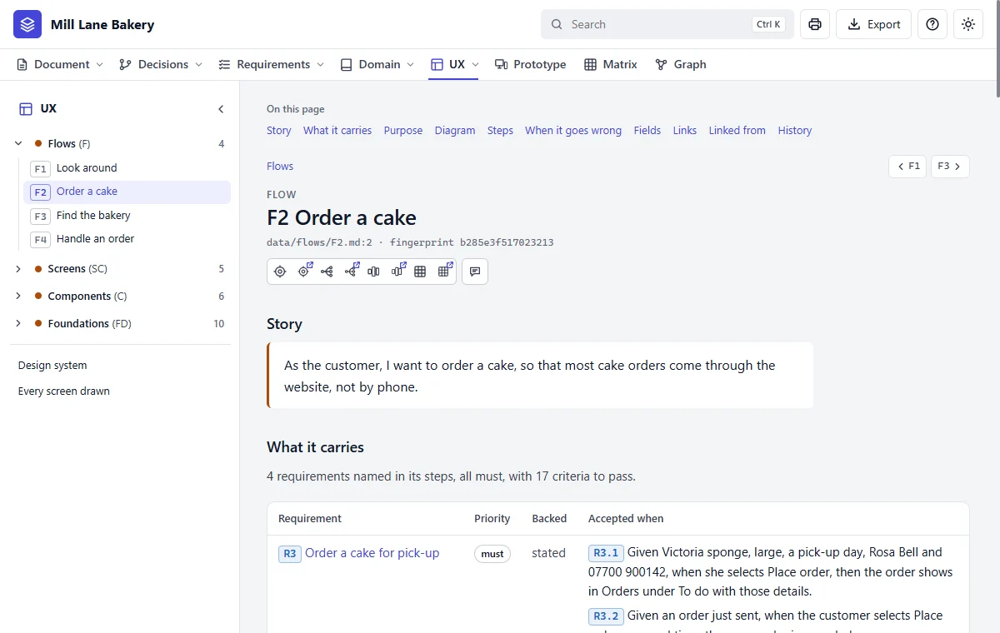
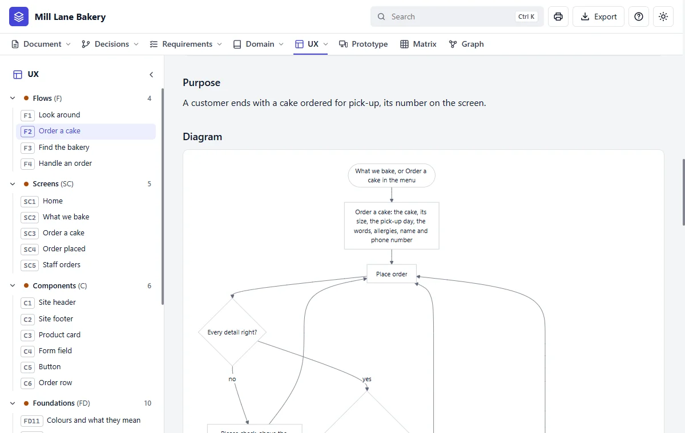

Step 10 of 20 · See what you got
Your flows
Do this
Click UX in the bar, then F2 Order a cake. A flow is one journey through the site, told from the side of the person taking it.


| Flow | Whose journey |
|---|---|
| F1 Look around | A customer sees what's baked |
| F2 Order a cake | A customer chooses, fills in the form, and gets a number |
| F3 Find the bakery | A customer checks the hours and address |
| F4 Handle an order | Staff see the order and mark it ready |